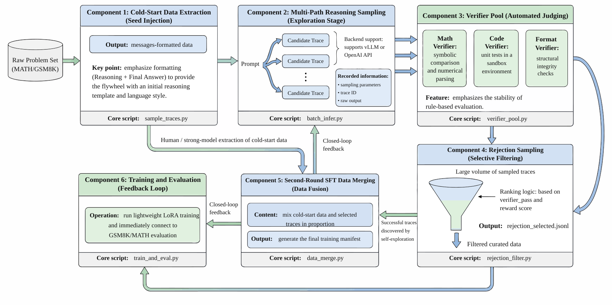

项目十二：教学化 R1 推理数据飞轮¶
摘要¶
本项目围绕“教学化 R1 推理数据飞轮”构建可复现的数据工程案例，重点说明业务目标、数据边界、架构决策、核心实现、验收指标与风险控制。章节将安装命令和脚本细节收敛到工程复盘视角，突出样本 schema、数据流、失败模式和可交付物之间的关系，帮助读者把前文方法转化为可审计、可扩展的项目资产。
关键词¶
R1；项目实战；可复现数据工程；数据流水线；验收指标
项目目标与读者收获¶
本项目以“教学化 R1 推理数据飞轮”为核心案例，目标是构建 Long-CoT 冷启动、拒绝采样和回流 SFT 的推理数据闭环。读者完成本章后，应能够辨认该场景的关键数据对象、拆分工程链路、设置验收指标，并将案例方法迁移到相近的数据工程任务中。
场景约束与数据边界¶
以推理数据工程链路为主，不覆盖完整强化学习平台和大规模在线训练，也不声明复现 DeepSeek-R1 的完整训练过程。这些边界使案例能够被复现和审计；当数据规模、数据来源、权限范围或部署环境变化时，需要重新评估采样策略、质量阈值、运行成本和合规要求。
架构决策¶
本项目采用“冷启动样本、长链推理、候选采样、验证筛选、拒绝采样和 SFT 回流”的架构路径。该决策优先保证输入输出契约、版本可追踪、异常可定位和结果可复核，而不是把全部逻辑压缩为一次性脚本运行。
样本 schema / 数据流¶
核心数据流可概括为：
代码清单P12-1 给出了流程或路径示例，用于说明本节中的输入输出关系、结构约束或执行方式。
代码清单P12-1：流程或路径示例
该片段的作用是把上述流程转化为可检查的结构化表示。
样本 schema 至少应保留 id、source、content_or_payload、metadata、quality_signals、split_or_stage 与 audit_trace 等字段；具体字段由本项目的数据类型、下游任务和验收方式进一步细化。
核心实现片段¶
正文只保留能够说明设计取舍的关键实现片段。完整脚本、长配置、运行日志和大文件应放入配套仓库或附录说明；代码展示重点放在输入输出契约、质量阈值、异常处理和验收接口上。
实验或验收指标¶
验收指标包括推理正确率、候选保留率、验证覆盖、长链长度分布、回流样本质量和成本/样本。若项目进入生产、课程或公开复现实验环境，还应记录版本号、依赖环境、随机种子、样本抽检结果和失败样本复盘记录。
表P12-1汇总了本节的关键对象、工程要点与复核口径。
表 P12-1：教学化 R1 推理数据飞轮出版验收表
| 验收维度 | 指标/证据 | 出版复核口径 |
|---|---|---|
| 候选生成 | 多路采样数量、长链长度分布和任务来源覆盖 | 说明 mock、vLLM 与真实模型采样之间的差异 |
| 筛选回流 | verifier 覆盖、候选保留率、回流样本质量和格式合格率 | 每条回流样本应能追踪到原任务、候选轨迹和验证结果 |
| 风险控制 | 自我强化错误、验证器偏差和过长轨迹噪声复盘 | 不把拒绝采样通过直接等同于推理能力提升 |
成本、风险与合规边界¶
成本主要来自长链生成、多候选采样和验证；风险集中在自我强化错误、验证器偏差和过长轨迹噪声。涉及外部数据、个人信息、版权内容或第三方服务时，应保留来源说明、权限状态、脱敏策略、调用记录和人工复核记录。
常见失败模式¶
常见失败包括输入分布偏离、schema 字段缺失、质量阈值过松或过紧、评测样本覆盖不足、模型调用不稳定、结果无法回溯等。排查时应优先定位数据边界和中间产物，再检查模型、工具链与部署环境。
可复现资源说明¶
复现材料应包括数据来源说明、最小样本、配置文件、运行命令、指标脚本、检查报告和产物目录。正文保留必要片段；完整 notebook、长脚本和大文件作为配套资源独立维护。
R1 风格推理数据飞轮——从 Long-CoT 冷启动到拒绝采样回流¶
背景与目标¶
R1 / QwQ (Guo et al. 2025; Qwen Team 2025) 这类推理模型带来的启发，并不只是“模型可以输出更长的思维链”，而是推理能力可以被拆成一条可运行的数据工程流水线。传统 SFT 项目通常围绕一批固定的 instruction-response 样本展开，训练完成后数据本身很少继续变化。R1 风格的数据飞轮则不同：模型会围绕同一任务生成多条候选轨迹，系统用 verifier 判断哪些轨迹正确、哪些轨迹格式稳定、哪些轨迹值得回流，再把筛选出的成功样本重新组织成下一轮监督微调数据。这样一来，数据不再只是训练前准备好的静态资产，而成为模型能力迭代的一部分。
对中小团队来说，完整复现大规模 RL 训练往往不现实。大规模在线采样、奖励建模、多轮策略更新和长上下文推理都需要持续占用 GPU 资源，也需要复杂的训练框架治理。更可落地的方式，是先把“数据飞轮”本身搭起来：冷启动数据能生成，多路采样能运行，verifier 能自动打分，拒绝采样能筛出高质量轨迹，二轮 SFT 数据能合并，评估脚本能比较训练前后的变化。只要这条链路稳定，后续无论接入更大的模型、更复杂的奖励，还是迁移到行业任务，都有可复用的工程基础。
本项目围绕 code/zh/project_12_r1_flywheel 中的代码展开，目标是实现一个教学化、小规模、最小可运行版 R1 风格推理数据飞轮。它不追求一次性复现 R1-Zero 的完整强化学习过程，也不等同于复现 DeepSeek-R1 的完整训练系统；本章只保留冷启动、候选采样、验证筛选、拒绝采样和 SFT 回流这些数据工程环节，并把 benchmark 分数放在验证闭环的位置，而不是作为唯一目标。项目默认以 Qwen2.5-7B-Instruct (Hui et al. 2024) 为基础模型，以 OpenThoughts (Guha et al. 2025)、GSM8K (Cobbe et al. 2021)、MATH-500 (Hendrycks et al. 2021) 和 HumanEval (Chen et al. 2021) 为主要数据源，构建从冷启动 SFT 到拒绝采样回流的闭环。
整条链路可以概括为：
代码清单P12-2 给出了流程或路径示例，用于说明本节中的输入输出关系、结构约束或执行方式。
OpenThoughts / GSM8K / MATH-500 / HumanEval
-> cold-start SFT data
-> vLLM sampled reasoning traces
-> math / code / format verifier
-> rejection sampling
-> merged SFT data
-> LoRA training and evaluation
代码清单P12-2：流程或路径示例
该片段的作用是把上述流程转化为可检查的结构化表示。
完成本项目后，读者应能理解三件事。第一，R1 风格系统中的关键工程对象不是单个模型权重，而是任务池、采样轨迹、verifier、拒绝采样结果和训练数据 manifest。第二，推理数据飞轮可以先用规则奖励和监督回流验证，不必一开始就进入完整 RL。第三，只要目标任务能够构造自动 verifier，这套结构就可以迁移到 SQL 生成、代码修复、结构化抽取、工具调用或企业内部题库。
2. 架构设计：六组件教学化 R1 推理数据飞轮¶
本项目的架构可以拆成六个组件：冷启动数据抽取、多路推理采样、verifier 池、拒绝采样、二轮 SFT 数据合并、训练与评估。六个组件之间通过文件和统一 schema 交接，而不是强耦合在一个长脚本里。这样做的好处是每一层都可以单独重跑：采样失败可以只重跑采样，verifier 更新可以只重跑拒绝采样，训练配比变化可以只重做数据合并。
图P12-1展示了相应的流程或结构。

{kind=link}
第一个组件是 冷启动数据抽取。对应脚本为 cold_start_data.py。它负责从已有数据源中抽取适合 SFT 的样本，并统一为 messages 格式。数学样本会组织成 Reasoning: 和 Final Answer:，代码样本会组织成 Reasoning: 和 fenced Python code block。冷启动数据的作用不是直接训练出最高性能模型，而是让模型具备基本的推理输出结构、语言风格和可解析格式。
第二个组件是 多路推理采样。对应脚本为 sample_traces.py。它让同一个 prompt 生成多条候选推理轨迹，并记录 prompt_id、sample_idx、raw_trace、parsed_answer 和 generation_params。项目同时支持 mock、本地 vLLM Python API 和外部 OpenAI 兼容 API 三种后端。在生产环境中，推理服务和数据处理脚本可以拆开部署，减少 CUDA、torch、vLLM 依赖互相牵制。
第三个组件是 verifier 池。对应脚本为 verifier_pool.py。它实现数学、代码和格式三类规则验证器。数学 verifier 负责答案抽取、数值解析和比较；代码 verifier 负责抽取 Python 代码块并运行测试；格式 verifier 负责检查 Reasoning:、Final Answer:、Code: 等结构是否存在。当前 verifier 属于 rule-based reward，不是复杂奖励模型，但它具有稳定、便宜、可解释的优点。
第四个组件是 拒绝采样。对应脚本为 rejection_sampling.py。它读取采样轨迹，按 prompt 分组调用 verifier，再根据 verifier_pass、reward_score 和 sample_idx 排序，保留每道题中较好的候选。被保留的轨迹会重新打包成 SFT 样本，写入 rejection_selected_10k_30k.jsonl。这一步是数据飞轮的核心：模型生成候选，系统自动筛选，成功轨迹回流训练。
第五个组件是 二轮 SFT 数据合并。对应脚本为 merge_sft_data.py。它把冷启动数据和拒绝采样数据合并为 merged_sft_data.jsonl，并生成 training_manifest.json。冷启动样本和回流样本虽然都进入 SFT，但含义不同：前者提供初始格式和推理风格，后者沉淀模型自己探索出的成功轨迹。
第六个组件是 训练与评估。train_lora.py 提供最小 LoRA 演示训练，eval_gsm8k_math.py 提供 GSM8K / MATH 评估入口。当前项目把训练和评估作为数据飞轮的验证接口，而不是把它们写成完整实验平台。它们的主要作用是检查：合并后的数据能否进入训练，训练后能否用统一评估脚本比较 base model 与 LoRA adapter。
主要产物如下：
表P12-2汇总了本节的关键对象、工程要点与复核口径。
表 P12-2：阶段与含义对照表
| 阶段 | 默认产物 | 含义 |
|---|---|---|
| 冷启动抽取 | data/processed/cold_start_5k.jsonl |
首轮 SFT 样本 |
| 冷启动统计 | data/processed/cold_start_summary.json |
来源、领域、数量统计 |
| 多路采样 | data/sampled_traces/*.jsonl |
模型候选推理轨迹 |
| verifier 输出 | data/verified_candidates/*.jsonl |
每个候选的验证结果 |
| 拒绝采样 | data/processed/rejection_selected_10k_30k.jsonl |
可回流高分轨迹 |
| 数据合并 | data/training/merged_sft_data.jsonl |
二轮 SFT 输入 |
| 训练记录 | data/training/training_manifest.json |
训练数据组成 |
| 评估结果 | data/reports/eval_results_gsm8k_math.json |
GSM8K / MATH 对比结果 |
3. 分步实现：从冷启动样本到可回流 SFT 数据集¶
Step 1：准备环境与任务数据¶
项目建议在独立 conda 环境中运行。进入代码目录后创建环境：
代码清单P12-3 给出了命令行运行示例，用于说明本节中的输入输出关系、结构约束或执行方式。
cd code/zh/project_12_r1_flywheel
conda env create -f environment.yml
conda activate p12-r1-flywheel
代码清单P12-3：命令行运行示例
该片段的作用是把上述流程转化为可检查的结构化表示。
在正式采样之前，可以先运行测试，确认 mock 管线和基础模块没有断：
代码清单P12-4 给出了命令行运行示例，用于说明本节中的输入输出关系、结构约束或执行方式。
代码清单P12-4：命令行运行示例
该片段的作用是把上述流程转化为可检查的结构化表示。
当前 tests/test_pipeline.py 覆盖冷启动抽取、math/code/format verifier、mock 采样、拒绝采样、SFT 合并、mock LoRA 训练和 mock 评估。测试通过只能说明工程骨架没有断，并不代表真实 vLLM 采样或大规模训练已经完成；但如果测试不通过，不应直接进入长任务。
输入数据可以按任务类型理解：OpenThoughts 提供 Long-CoT 冷启动样本，GSM8K 和 MATH-500 提供数学题，HumanEval 提供代码任务。真正落地时，数据可以来自公开数据集，也可以替换为企业内部题库；只要样本能被整理成统一 schema，并能提供 reference answer 或测试用例，就可以进入这条飞轮。
Step 2：抽取冷启动 SFT 数据¶
冷启动阶段的目标，是把不同来源的数据整理成统一的 SFT 消息格式。运行命令如下：
代码清单P12-5 给出了命令行运行示例，用于说明本节中的输入输出关系、结构约束或执行方式。
python cold_start_data.py \
--max-openthoughts 5000 \
--max-math 100 \
--max-gsm8k 100 \
--max-code 100
代码清单P12-5：命令行运行示例
该片段的作用是把上述流程转化为可检查的结构化表示。
输出文件默认为：
代码清单P12-6 给出了流程或路径示例，用于说明本节中的输入输出关系、结构约束或执行方式。
代码清单P12-6：流程或路径示例
该片段的作用是把上述流程转化为可检查的结构化表示。
每条冷启动样本包含 record_id、source_dataset、domain、prompt、reference_reasoning、reference_answer 和 messages。其中 messages 是训练真正消费的字段，结构大致如下：
代码清单P12-7 给出了 Python 实现片段，用于说明本节中的输入输出关系、结构约束或执行方式。
record = {
"record_id": "math_gsm8k_000001",
"source_dataset": "gsm8k",
"domain": "math",
"prompt": "A math problem...",
"reference_reasoning": "Step-by-step solution...",
"reference_answer": "42",
"messages": [
{"role": "system", "content": "You are a careful reasoning assistant."},
{"role": "user", "content": "A math problem..."},
{"role": "assistant", "content": "Reasoning: ...\nFinal Answer: 42"}
],
}
代码清单P12-7：Python 实现片段
该片段的作用是把上述流程转化为可检查的结构化表示。
对于代码任务，assistant 内容会变成：
代码清单P12-8展示了代码任务中 assistant 回复内容的格式示例。
代码清单P12-8：代码任务 assistant 回复格式示例
该片段的作用是把上述流程转化为可检查的结构化表示。
这里有一个容易忽略的细节。HumanEval 中的 canonical_solution 往往只包含函数体，如果直接拿来训练，模型可能学到不完整代码片段。项目在 pipeline_utils.py 中实现了 render_humaneval_solution(...)，把 prompt 中的函数签名和 canonical_solution 拼成完整函数定义，从而让 reference_answer 更适合训练和验证。
冷启动数据生成后，应先检查 cold_start_summary.json。重点看三项：总样本数是否符合预期，domain_distribution 是否过度偏向单一任务，抽样查看 messages 是否存在空回答或格式错乱。如果这一步数据质量不足，后续采样和拒绝采样都会被放大污染。
Step 3：使用 mock 或 vLLM 生成多路推理轨迹¶
采样阶段的输入是 cold_start_5k.jsonl 中的 prompt，输出是每个 prompt 的多条候选推理轨迹。为了先验证流程，可以使用 mock 后端：
代码清单P12-9 给出了命令行运行示例，用于说明本节中的输入输出关系、结构约束或执行方式。
python sample_traces.py \
--input data/processed/cold_start_5k.jsonl \
--output-dir data/sampled_traces \
--num-examples 20 \
--num-samples 2 \
--backend mock \
--force-mock
代码清单P12-9：命令行运行示例
该片段的作用是把上述流程转化为可检查的结构化表示。
mock 后端不用于评估真实模型能力，只用于检查数据链路是否能继续向下游流动。真实采样时，可以启动 vLLM 服务，并通过 OpenAI 兼容 API 调用：
代码清单P12-10 给出了命令行运行示例，用于说明本节中的输入输出关系、结构约束或执行方式。
代码清单P12-10：命令行运行示例
该片段的作用是把上述流程转化为可检查的结构化表示。
随后执行采样脚本：
代码清单P12-11 给出了命令行运行示例，用于说明本节中的输入输出关系、结构约束或执行方式。
python sample_traces.py \
--input data/processed/cold_start_5k.jsonl \
--output-dir data/sampled_traces \
--num-examples 100 \
--num-samples 4 \
--backend openai \
--parallel-prompts 4
代码清单P12-11：命令行运行示例
该片段的作用是把上述流程转化为可检查的结构化表示。
采样记录的核心字段如下：
代码清单P12-12 给出了 Python 实现片段，用于说明本节中的输入输出关系、结构约束或执行方式。
sample = {
"prompt_id": "math_gsm8k_000001",
"sample_idx": 0,
"source_dataset": "gsm8k",
"domain": "math",
"generation_params": {
"temperature": 0.7,
"top_p": 0.95,
"max_tokens": 768,
},
"raw_trace": "Reasoning: ...\nFinal Answer: 42",
"parsed_answer": "42",
"finish_reason": "stop",
"token_count": 512,
}
代码清单P12-12：Python 实现片段
该片段的作用是把上述流程转化为可检查的结构化表示。
采样阶段最重要的是保留完整 raw_trace，而不是只保留最终答案。完整轨迹后续有三种用途：第一，进入 verifier 判断是否正确；第二，作为高质量候选回流训练；第三，作为错误分析样本，帮助定位模型是格式失败、答案失败，还是推理路径失败。
如果显存或吞吐不足，可以先降低 num_samples、parallel_prompts 和 max_tokens。这些降级只影响规模，不应改变数据格式。
Step 4：构建数学、代码与格式 verifier¶
verifier 是本项目的核心，因为它决定哪些候选可以成为回流数据。当前 verifier_pool.py 中的验证器分三类。
数学 verifier 会先从模型输出中提取最终答案，优先识别 \boxed{}、Final Answer: 等模式，再尝试解析数值。如果预测值和参考答案都能解析为数值，则按容差比较；否则做归一化字符串比较。它会返回 verifier_pass、reward_score、parsed_answer 和 reason。
代码 verifier 会抽取 fenced Python code block 或包含 def 的代码片段，再和测试样例一起运行。通过测试则给高分；缺少代码块、执行超时、抛异常或测试失败都会记录具体原因。当前实现适合 HumanEval 风格任务，不等同于完整代码评测平台，但足以支撑拒绝采样原型。
格式 verifier 检查输出结构是否稳定。数学题至少应包含 Reasoning: 和可解析的最终答案；代码题至少应包含 Reasoning: 和 Python 代码块。许多候选轨迹并不是内容完全错误，而是格式不稳定导致无法抽取答案。格式 verifier 的作用就是把这类样本尽早标记出来。
一个 verifier 输出可以理解为：
代码清单P12-13 给出了 Python 实现片段，用于说明本节中的输入输出关系、结构约束或执行方式。
verdict = {
"verifier_type": "math",
"verifier_pass": True,
"format_pass": True,
"reward_score": 1.0,
"parsed_answer": "42",
"verification_reason": "exact_numeric_match",
"verification_details": {
"expected": "42"
},
}
代码清单P12-13：Python 实现片段
该片段的作用是把上述流程转化为可检查的结构化表示。
这个结构比单一分数更有价值。后续如果拒绝采样通过率突然下降，可以根据 verification_reason 判断问题来自格式漂移、答案解析、代码执行，还是任务本身过难。对一个数据飞轮来说，可解释的失败原因和成功样本同样重要。
Step 5：拒绝采样并生成回流样本¶
拒绝采样读取 data/sampled_traces 中的候选，调用 verifier 后按 prompt 分组筛选。运行命令如下：
代码清单P12-14 给出了命令行运行示例，用于说明本节中的输入输出关系、结构约束或执行方式。
python rejection_sampling.py \
--cold-start data/processed/cold_start_5k.jsonl \
--sample-dir data/sampled_traces \
--selected-per-prompt 2 \
--min-reward 0.8
代码清单P12-14：命令行运行示例
该片段的作用是把上述流程转化为可检查的结构化表示。
筛选优先级为：
verifier_passreward_scoresample_idx
默认每个 prompt 保留最多 selected_per_prompt 条轨迹。被选中的记录会写入：
代码清单P12-15 给出了流程或路径示例，用于说明本节中的输入输出关系、结构约束或执行方式。
代码清单P12-15：流程或路径示例
该片段的作用是把上述流程转化为可检查的结构化表示。
同时，每个 prompt 的验证结果会写入：
代码清单P12-16 给出了流程或路径示例，用于说明本节中的输入输出关系、结构约束或执行方式。
代码清单P12-16：流程或路径示例
该片段的作用是把上述流程转化为可检查的结构化表示。
拒绝采样的输出样本会被重新组织成 SFT 格式：
代码清单P12-17 给出了 Python 实现片段，用于说明本节中的输入输出关系、结构约束或执行方式。
selected = {
"record_id": "math_gsm8k_000001_rs0",
"source_dataset": "gsm8k",
"domain": "math",
"prompt": "A math problem...",
"messages": [
{"role": "system", "content": "You are a careful reasoning assistant."},
{"role": "user", "content": "A math problem..."},
{"role": "assistant", "content": "Reasoning: ...\nFinal Answer: 42"}
],
"verifier_pass": True,
"reward_score": 1.0,
}
代码清单P12-17：Python 实现片段
该片段的作用是把上述流程转化为可检查的结构化表示。
这里需要避免一个误区：拒绝采样不是简单地“删除所有失败样本”。当前训练数据只使用成功轨迹，但失败轨迹仍然会保存在 verified_candidates 中。它们可以用于分析模型常见错误、修复 verifier 漏洞、构建 hard case 池或后续训练过程奖励模型。
如果目标是生成 10K+ 回流样本，需要根据通过率反推候选规模。例如每题采样 4 条、通过率 25%、每题最多保留 1 条时，最终入选样本数会明显低于候选总数。扩大规模时不应只放宽 min_reward，还要检查通过率、格式失败率和题目难度分布。
Step 6：合并二轮 SFT 数据、训练 LoRA 并评估¶
拒绝采样完成后，将冷启动数据和回流数据合并：
代码清单P12-18 给出了命令行运行示例，用于说明本节中的输入输出关系、结构约束或执行方式。
代码清单P12-18：命令行运行示例
该片段的作用是把上述流程转化为可检查的结构化表示。
默认输出：
代码清单P12-19 给出了流程或路径示例，用于说明本节中的输入输出关系、结构约束或执行方式。
代码清单P12-19：流程或路径示例
该片段的作用是把上述流程转化为可检查的结构化表示。
合并时会按 prompt 和 assistant 内容去重，并记录来源分布。冷启动数据和回流数据在训练中应当保留不同 source_stage，因为二者承担的作用不同。冷启动样本主要提供稳定格式和基础推理风格，回流样本则来自模型采样和 verifier 筛选，代表当前策略已经探索出的成功轨迹。
LoRA 演示训练命令如下：
代码清单P12-20 给出了命令行运行示例，用于说明本节中的输入输出关系、结构约束或执行方式。
python train_lora.py \
--dataset data/training/merged_sft_data.jsonl \
--output-dir data/training/lora_ckpt \
--max-train-samples 1024 \
--epochs 2
代码清单P12-20：命令行运行示例
该片段的作用是把上述流程转化为可检查的结构化表示。
评估命令如下：
代码清单P12-21 给出了命令行运行示例，用于说明本节中的输入输出关系、结构约束或执行方式。
python eval_gsm8k_math.py \
--model-path <base-model-path> \
--adapter-path data/training/lora_ckpt \
--max-examples 100 \
--tasks gsm8k,math \
--backend openai
代码清单P12-21：命令行运行示例
该片段的作用是把上述流程转化为可检查的结构化表示。
评估结果默认写入：
代码清单P12-22 给出了流程或路径示例，用于说明本节中的输入输出关系、结构约束或执行方式。
代码清单P12-22：流程或路径示例
该片段的作用是把上述流程转化为可检查的结构化表示。
需要强调的是，LoRA 与评估脚本在本项目中主要用于验证数据闭环，而不是保证一次训练就获得稳定涨分。最终收益高度依赖样本规模、采样质量、verifier 严格程度、训练比例、学习率和评估集隔离情况。工程闭环验证和模型效果提升是两件相关但不等价的事。
结果展示与分析¶
本项目的最终产出不是一张单独的分数表，而是一组可以复盘的数据资产。最小可验收结果应包括：
表P12-3汇总了本节的关键对象、工程要点与复核口径。
表 P12-3：产物与检查点对照表
| 产物 | 检查点 |
|---|---|
cold_start_5k.jsonl |
字段完整，messages 可直接用于 SFT |
cold_start_summary.json |
能看到来源和领域分布 |
sampled_traces/*.jsonl |
同一 prompt 有多条候选轨迹 |
verified_candidates/*.jsonl |
每条候选有 verifier 结果和失败原因 |
rejection_selected_10k_30k.jsonl |
高分轨迹被重新打包为 SFT 样本 |
merged_sft_data.jsonl |
冷启动和回流数据完成合并 |
training_manifest.json |
记录合并规模与领域分布 |
eval_results_gsm8k_math.json |
能比较 base 与 LoRA 的评估结果 |
从工程角度看，验收可以分成三层。第一层是链路验收：pytest -q 通过，mock 模式可以完成冷启动、采样、验证、拒绝采样、合并、训练和评估。第二层是真实采样验收：vLLM 服务可以被 sample_traces.py 调用，采样结果进入 sampled_traces，并能被 verifier 处理。第三层是效果验收：LoRA 训练后在 GSM8K / MATH 上相对 base model 有稳定收益。当前项目优先保证前两层，第三层需要更大规模数据和多轮调参。
成本方面，最主要的开销来自多路采样和训练。若资源紧张，可以采用以下降级策略：
表P12-4汇总了本节的关键对象、工程要点与复核口径。
表 P12-4：资源瓶颈与降级方式对照表
| 资源瓶颈 | 降级方式 |
|---|---|
| 显存不足 | 降低 max_model_len、max_num_seqs 或并发 prompt |
| 采样过慢 | 将 num_samples 从 16 降到 4 |
| verifier 通过率低 | 先只跑数学任务，暂缓代码任务 |
| 回流样本不足 | 扩大候选采样，而不是盲目放宽 verifier |
| LoRA 训练慢 | 先用 --max-train-samples 1024 做 smoke train |
| 评估耗时长 | 先用 --max-examples 100，再扩大评估规模 |
本章小结¶
本章以“教学化 R1 推理数据飞轮”为案例，展示了构建 Long-CoT 冷启动、拒绝采样和回流 SFT 的推理数据闭环的工程组织方式。案例的主要价值在于把任务定义、数据边界、架构决策、样本 schema、指标验收和复现资源放在同一条链路中，使项目不再只是操作步骤，而成为可复核的案例研究。
该案例的边界同样需要被清楚保留。以教学化、小规模推理数据工程链路为主，不覆盖完整强化学习平台、大规模在线训练或 DeepSeek-R1 完整训练复现。在更大规模、更高风险或更强合规约束的场景中，应重新评估数据来源、权限状态、人工复核比例、运行成本和失败回滚方案。
作为第十四篇的一部分，本章对应前文方法在项目层面的落地验证。读者可将本案例与第十三篇的数据配方、前文的平台治理章节以及附录中的检查清单合并使用，形成从方法理解到工程交付的闭环。
参考文献¶
Chen M, Tworek J, Jun H, Yuan Q, Pinto H P O, Kaplan J, Edwards H, Burda Y, Joseph N, Brockman G, others (2021) Evaluating Large Language Models Trained on Code (HumanEval). arXiv preprint arXiv:2107.03374.
Cobbe K, Kosaraju V, Bavarian M, Chen M, Jun H, Kaiser L, Plappert M, Tworek J, Hilton J, Nakano R, Hesse C, Schulman J (2021) Training Verifiers to Solve Math Word Problems (GSM8K). arXiv preprint arXiv:2110.14168.
Guo D, Yang D, Zhang H, Song J, Zhang R, Xu R, Zhu Q, Ma S, Wang P, Bi X, others (2025) DeepSeek-R1: Incentivizing Reasoning Capability in LLMs via Reinforcement Learning. arXiv preprint arXiv:2501.12948.
Guha E, Marten R, Keh S, Raoof N, Smyrnis G, Bansal H, Nezhurina M, Mercat J, Vu T, Sprague Z, others (2025) OpenThoughts: Data Recipes for Reasoning Models. arXiv preprint arXiv:2506.04178.
Hendrycks D, Burns C, Kadavath S, Arora A, Basart S, Tang E, Song D, Steinhardt J (2021) Measuring Mathematical Problem Solving with the MATH Dataset. In: Advances in Neural Information Processing Systems 34:24262-24273. arXiv:2103.03874.
Hui B, Yang J, Cui Z, Yang J, Liu D, Zhang L, Liu B, Yu B, Lu K, Chi K, others (2024) Qwen2.5 Technical Report. arXiv preprint arXiv:2412.15115.
Qwen Team (2025) QwQ-32B: Embracing the Power of Reinforcement Learning for Reasoning Models. Qwen Blog. https://qwenlm.github.io/blog/qwq-32b/.